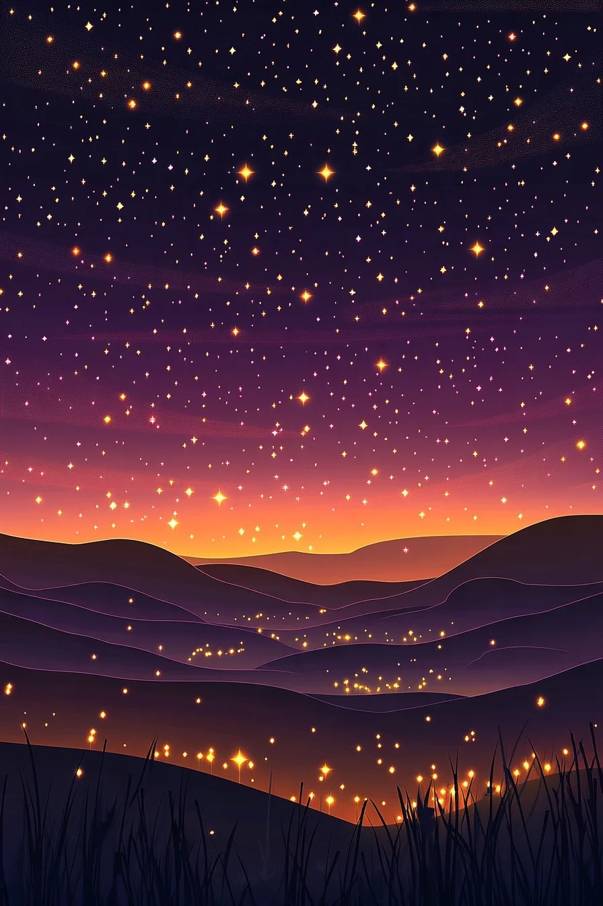

THE OPEN SKY & THE FOUR SIGILS
A new Midjourney scene for the unsigned campaign card — the night the other eleven cards get, with no beast in it — and four sigil rectangles, one per rarity, cut from the same star-stuff.
THE SIX MJ JOBS (for the record — reroll = same formula, new subject words)
anchor/sref (all six): cdn.midjourney.com/7ad41d09-9759-4ade-a9d1-fcf641eb8983/0_1.webp · --s 100 --style raw --v 6.1
sky A · 91fb5fcb-974c-4491-975e-ede0baa6c2e3 — "flat vector illustration, a vast open twilight night sky with tiny glowing stars scattered across it, layered indigo violet plum rose gradient dusk, silhouetted meadow hills and fireflies below, clean simple shapes, dreamy storybook night --no animals, creatures, constellation figures, moon, text --ar 2:3"
sky B · 607708d7-ab8b-499a-8418-c5c654c5b528 — same, with "a faint band of drifting stardust"
common · 5adf7eb9-bf58-448d-8b3d-a3c8737c4e76 — "an ornate rectangular game plaque frame carved from warm brown wood and bronze, plain dark empty center panel, a small star emblem at the top of the frame, on a twilight indigo background … --no text, letters, words, runes --ar 2:1"
rare · da1d3a12-5af0-44b3-bcb4-b4f0fac8c929 — "… glowing sapphire blue crystal with a gentle icy glow …"
epic · 99adf29a-f46f-41e7-87bc-229b51242d4b — "… glowing amethyst purple crystal with wisps of violet starlight …"
legendary · f856b7bc-3c37-474c-bccb-e930d573508c — "… blazing glowing orange ember light, radiant molten gold-orange glow with drifting sparks …"
I · THE OPEN SKY, ALIVE

What you are looking at. The whole-card mock is the sign picker's unsigned slot-0 card wearing MJ sky A frame 1 — the same dusk gradient, meadow hills and fireflies the eleven signed cards got, with nothing drawn in the sky. The twinkling and the shooting stars riding over it are this page's mirror of the living layer the game already ships on this card (v0.84.0): a seeded star field that breathes, and a right-and-down shooting star that arrives as a surprise (first one 4–7s in, then every 8–15s) — bright most of its crossing, gone at the end.
The one honest fact: the motion is already in the game. What the card is missing is the art — today the unsigned card stands on the plain generated 'zodsky' plate. Ship shape is small: swap the plate for this image, exactly the way the eleven zodiac cards load theirs, and the existing living layer keeps doing its work on top. Nothing else moves.
PICK THE SKY — 8 FRAMES CAME BACK (chip = your pick)
II · THE FOUR SIGIL RECTANGLES
One rectangle per rarity, all four sref'd to the same anchor so they sit in one world: carved brown for common, sapphire blue for rare, amethyst purple for epic, and a glowing orange legendary that breathes, sparks and shimmers. The text inside is real game text — EMBER QUILL climbing its own four-step ladder, I → IV, the one sigil in the book whose ladder touches every grade.


THE SAME RECTANGLES DRESSING DROPS
The rarity words also name what falls in a hunt — so here is each rectangle holding a different sigil, the way a drop card or the forge would wear it.
PICK EACH RECTANGLE — 4 FRAMES PER RARITY (chip = your pick)
III · THREE QUESTIONS
Q1 · THE LEGENDARY COLOR. You called legendary glowing orange, and the plaque above wears it. In the game today, legendary dress is gold everywhere — the drop card's gold rays, the grade-IV ink, the award fanfare. Does orange become the legendary color of the whole game, or does gold keep the game and orange live only on these rectangles?
Q2 · WHAT DO THE RECTANGLES DRESS? Common→rare→epic→legendary is the ladder a held sigil climbs (I·II·III·IV — EPIC lives only there today; drops fall as basic / rare / legendary). Are these four rectangles the dress of the grades, of the drops (which would add an epic drop tier), or both?
Q3 · THE OPEN SKY ART. Swap the unsigned card's plain plate for the picked frame (art only — the v0.84.0 living layer stays exactly as shipped), or hold?
IV · WHAT A BUILD WOULD COST (honest)
The rectangles: real work. MJ frames are scenic paintings — a build cuts each plaque off its hills with an authored mask (never a color key), measures the hue thresholds, and re-cuts the border as stretchable slices, because a fixed-proportion picture can't hold two-line and five-line sigil text alike; the legendary's glow, sparks and shimmer get re-added in-engine, since baked light on a scaled sprite peels like a sticker. One family, many surfaces (drop cards, forge, sign pages, the versus inspector) — sized per surface at build time. ~2–2.5 days for the family.
Orange-everywhere (if Q1 says so): recolor of the legendary dress + fanfare + suites re-pinned, ~half a day on top.
Nothing here is built. This page is a look, not a queue item — per the standing law, a build fires only on "done and agreed", as its own card. Chips and notes save on this device; COPY VERDICTS below builds the paste-back block.